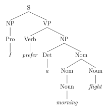

Context-free grammars
Modern LLM user neural networks to do "blackbox" generation, while CFG can give you "whitebox" generation, etc., through a parse tree.
Productions and derivations
A context-free grammar (CFG) is a tuple \(G = (N, \Sigma, P, S)\) where
- \(N\) is a finite set of nonterminals, the symbols that rules can rewrite.
- \(\Sigma\) is a finite set of terminals, the symbols that make up the generated strings. The sets \(N\) and \(\Sigma\) are disjoint.
- \(P \subseteq N \times (N \cup \Sigma)^*\) is a finite set of productions. We write \((A, \alpha) \in P\) as \(A \rightarrow \alpha\). The right-hand side \(\alpha\) can be the empty string \(\epsilon\).
- \(S \in N\) is the start symbol.
For each production \(A \rightarrow \alpha\) and any surrounding strings \(u, v \in (N \cup \Sigma)^*\), the grammar permits the rewrite
The grammar is context-free because the rule can rewrite \(A\) regardless of its context \(u\) and \(v\). The arrow \(\rightarrow\) specifies a production, \(\Rightarrow_G\) denotes one rewrite step, and \(\Rightarrow_G^*\) denotes zero or more steps.
The language generated by \(G\) is
A language \(L\) is context-free if \(L = \mathcal{L}(G)\) for some CFG \(G\).
Examples
Arithmetic expressions
Let \(E\) be the start symbol and \(N = \{E, \mathrm{Op}\}\). The terminal set is
where \(\mathtt{int}\) is a single terminal token. The productions are
Each step in the following derivation rewrites one occurrence of a nonterminal.
The final string contains only terminals, so \(\mathtt{int*(int+int)} \in \mathcal{L}(G)\).
A non-context-free language
Let \(L = \{a^n b^n c^n \mid n \ge 1\}\). The three blocks occur in order and have the same length. No CFG generates \(L\). See Wikipedia’s pumping-lemma proof.
A grammar \(H\) that generates \(L\) has start symbol \(S\). Its nonterminals are \(\{S, B, C\}\) and its terminals are \(\{a, b, c\}\). The productions are
The rule \(CB \rightarrow BC\) can apply only when \(C\) is immediately followed by \(B\). This violates the CFG definition, which requires a single nonterminal on the left-hand side of each production.
Converting a regular expression to a CFG
The regular expression ab*[cde] matches strings of the form \(ab^k t\) for \(k \ge 0\) and \(t \in \{c, d, e\}\). An equivalent CFG has start symbol \(S\) and productions
A CFG with no equivalent regular expression
The CFG with start symbol \(S\) and productions
generates \(L = \{a^n b^n \mid n \ge 1\}\).
The language \(L\) is nonregular, so no formal regular expression describes it. The pumping-lemma argument works for both \(n \ge 0\) and \(n \ge 1\). See Wikipedia’s worked example.
A small English grammar
The following productions describe a fragment of English called \(L_0\). The categories \(\mathrm{NP}\), \(\mathrm{VP}\), and \(\mathrm{PP}\) denote noun phrases, verb phrases, and prepositional phrases. In the rules and the tree below, \(\mathrm{Pro}\) stands for pronoun, \(\mathrm{Det}\) for determiner, and \(\mathrm{Nom}\) for nominal.
The parse tree for “I prefer a morning flight” shows how the words form a noun phrase and a verb phrase.

The grammar captures phrase structure and can also license implausible combinations. For example, \(\mathrm{VP} \rightarrow \mathrm{Verb}\,\mathrm{NP}\) allows both “prefer a flight” and “write a flight” if both verbs have the same lexical category.
Chomsky normal form
A CFG \(G = (N, \Sigma, P, S)\) is in Chomsky normal form (CNF) if its productions have one of two forms.
With these rules, every generated string is nonempty, so \(\mathcal{L}(G) \subseteq \Sigma^+\). For any CFG \(G\), there is a grammar in this form that generates \(\mathcal{L}(G) \setminus \{\epsilon\}\). To preserve \(\epsilon\) when it belongs to the language, the extended form also allows \(S \rightarrow \epsilon\), provided \(S\) never appears on a right-hand side.
Converting a rule to CNF
CFG:
CNF:
Parsing
Syntactic parsing finds the parse trees a grammar assigns to a sentence. The Cocke–Kasami–Younger (CKY) algorithm uses dynamic programming to combine shorter spans into longer ones.
First convert the grammar to CNF. For a nonempty input \(w_1 \cdots w_n\), let \(T[i,j]\) store the nonterminals \(A \in N\) that derive the span \((i,j]\), where \(0 \le i < j \le n\).
Fill the one-token spans \(T[i, i+1]\) using terminal productions. For each longer span, try every split point \(k\) and use binary productions to combine the two subspans.
The input belongs to \(\mathcal{L}(G)\) exactly when \(S \in T[0,n]\). To recover parse trees, also record the productions and split points that added each nonterminal to the chart.
A sentence can have multiple parses. In “I shot an elephant in my pajamas,” the phrase “in my pajamas” can attach to the noun phrase “an elephant” or to the verb phrase “shot an elephant.” A probabilistic context-free grammar (PCFG) assigns probabilities to productions, which can be estimated from annotated data. A parse tree's probability is the product of the probabilities of its productions, so a parser can rank competing trees.
Synchronous context-free grammars
A synchronous context-free grammar (S-CFG) with a shared nonterminal set is a tuple
Here \(N\) is a finite set of nonterminals, \(\Sigma_{\mathrm{src}}\) and \(\Sigma_{\mathrm{tgt}}\) are finite source and target terminal alphabets disjoint from \(N\), \(S \in N\) is the start symbol, and \(P\) is a finite set of productions.
For a string \(\gamma\), let \(I_N(\gamma)\) be its set of nonterminal positions.
A production has the form \(A \rightarrow \langle \alpha, \beta, \pi \rangle\), where \(A \in N\) and the two strings are drawn from their respective alphabets.
The bijection \(\pi \colon I_N(\alpha) \to I_N(\beta)\) links occurrences of the same nonterminal, so \(\alpha_i = \beta_{\pi(i)}\) for every \(i \in I_N(\alpha)\). Matching subscripts mark linked occurrences.
A rewrite applies one production to both occurrences of a linked nonterminal \(A_k\).
where \(\widetilde{\alpha}\) and \(\widetilde{\beta}\) are \(\alpha\) and \(\beta\) with a fresh shared subscript for each pair \((i, \pi(i))\). The grammar generates the relation
English–Japanese example
The first component of each pair is English, and the second is romanized Japanese.
The \(\mathrm{VP}\) rule places the object after the verb in English and before it in Japanese.
References
Course materials
- Tianxing He. Natural Language Processing, Part I.
- Daniel Jurafsky and James H. Martin. Speech and Language Processing, third-edition draft. Constituency Grammars and Constituency Parsing.
- Jacob Andreas and James Glass. Advanced Natural Language Processing (MIT 6.806/6.864) lecture slides.
- Yulia Tsvetkov. University of Washington CSE 447. Syntactic Parsing lecture slides.
- Zhilin Yang. Natural Language Processing lecture slides, Tsinghua University.
- Stanford CS336. Language Modeling from Scratch lecture materials.